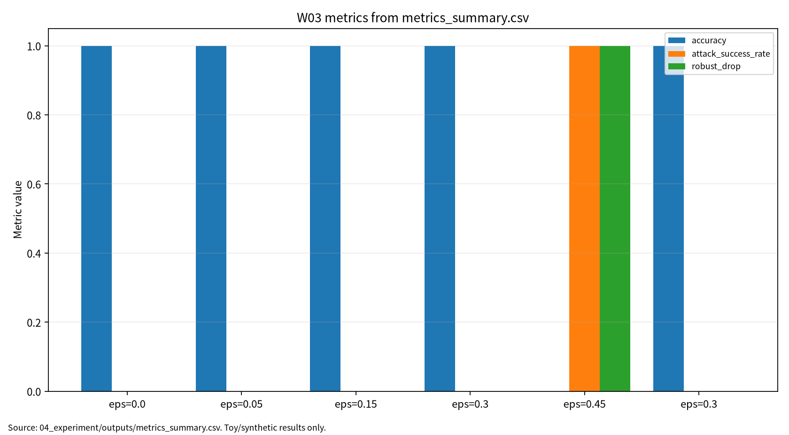

본 보고서는 컴퓨터비전 표현학습과 비전 대적공격을 연결하여 정상 조건 성능과 공격 조건 성능을 분리해 평가해야 함을 정리한다. CNN, Vision Transformer, 멀티모달 Transformer, 2D/3D 비전 강건성 문헌을 비교하고, clean accuracy, robust accuracy, ASR, robust drop, confusion matrix, reproducibility evidence를 핵심 평가축으로 제시한다. 실습은 synthetic 8×8 막대 이미지 기반 안전 toy 실험과 nearest-centroid model을 사용했으며, 실제 CNN/ViT 공격 재현이나 운영 시스템 공격은 포함하지 않는다. 본 문서는 제출용 보고서이며 최종 제출 전 사람이 DOI, PDF 보관 정책, 인용, HTML 인쇄 상태를 확인해야 한다.
키워드: 컴퓨터비전, CNN, Vision Transformer, 대적공격, robust accuracy, ASR, 재현성
| 항목 | 내용 |
|---|---|
| 주차 | W03 |
| 작성자 | 박영세 |
| 학번 | 26200122 |
| 보고서 제목 | 컴퓨터비전 표현학습 & 비전 대적공격 |
| 작성일 | 2026-06-22 |
| 보완일 | 2026-06-23 |
| 문서 상태 | 제출용 보고서 |
| 관련 산출물 위치 | 03_weekly_reports/w03_computer_vision_adversarial/ |
| ## 1. 한 문장 요약 |
W03는 비전 모델의 표현학습 원리를 CNN/ViT/멀티모달 Transformer 관점에서 정리하고, 공격 조건에서는 clean accuracy와 robust accuracy, ASR을 분리해 보고해야 함을 safe toy 실험으로 확인한다.
W03는 W01의 ML 생명주기 보안 평가와 W02의 학습 데이터 오염 위협을 비전 모델의 입력·표현·추론 단계로 확장하는 주차다. W01이 AI 보안 평가의 기본 프레임을 세웠고, W02가 학습 단계 오염을 다루었다면, W03는 이미지 입력과 시각 표현이 공격 조건에서 어떻게 흔들릴 수 있는지를 다룬다. 이후 W04 Transformer/NLP 보안, W05 self-supervised/backdoor, W06 deepfake, W07 multimodal LLM 보안과 연결된다.
CNN은 지역 receptive field와 gradient 기반 학습을 통해 이미지의 계층적 표현을 학습한다[1]. 딥러닝 기반 컴퓨터비전은 classification, detection, segmentation 등 다양한 응용으로 확장되었다[2]. 멀티모달 Transformer는 이미지와 텍스트 등 서로 다른 modality를 attention 기반으로 정합한다[3]. Vision Transformer는 이미지를 patch token으로 변환해 Transformer 구조에 입력한다[4].
표 1. W03 핵심 개념과 보안 연결
| 개념 | 원리 | 보안 연결 |
|---|---|---|
| CNN | 지역성과 weight sharing | gradient 기반 교란 배경 |
| ViT | patch token과 self-attention | patch/attention 취약성 |
| Multimodal Transformer | cross-modal alignment | image-text mismatch |
| Clean/robust metric separation | 정상 조건과 공격 조건 분리 | 안전성 과장 방지 |
비전 대적공격은 입력 이미지 또는 센서 입력을 변형해 예측을 바꾸는 위협이다. 비전 모델의 보안성 평가는 clean accuracy뿐 아니라 robust accuracy, ASR, 2D/3D safety 지표를 함께 고려해야 한다[5]. 본 보고서는 공격 절차가 아니라 보호 자산, 공격자 가정, 평가 지표, 재현성 근거를 중심으로 작성한다.
그림 1. 비전 대적공격 평가 흐름
Clean Image
↓
Vision Model / Representation
↓
Clean Evaluation ──> Clean Accuracy, Macro F1
↓
Perturbed Image
↓
Robust Evaluation ──> Robust Accuracy, ASR, Robust Drop, Confusion Matrix
↓
Defense/Check ──> Feature Squeezing Result
↓
Reproducibility Evidence ──> seed, config, Docker, outputs, PGM examples
표 2. 관련 문헌 5편 요약
| 번호 | 논문 | 최종 서지 핵심 | 활용 |
|---|---|---|---|
| [1] | LeCun et al., 1998 | Proceedings of the IEEE, 86(11), 2278-2324 | CNN/gradient 학습 |
| [2] | Voulodimos et al., 2018 | Computational Intelligence and Neuroscience, Article ID 7068349 | CV 딥러닝 응용 |
| [3] | Xu et al., 2023 | IEEE TPAMI, 45(10), 12113-12132 | 멀티모달 Transformer |
| [4] | Khan et al., 2022 | ACM Computing Surveys, 54(10s), 1-41 | Vision Transformer |
| [5] | Li et al., 2024 | ACM Computing Surveys, 56(6), 1-37 | 2D/3D adversarial robustness |
P02의 저자는 Athanasios Voulodimos로 정정했고, P05의 최종 출판연도는 2024년으로 확인했다.
P01-P04는 AI 원리 중심, P05는 보안 평가 중심이다. P01은 CNN, P02는 CV 딥러닝 응용, P03은 멀티모달 Transformer, P04는 ViT, P05는 2D/3D adversarial robustness를 담당한다. CNN은 지역성과 translation bias를 강하게 갖고, ViT는 patch token과 attention을 통해 전역 관계를 학습한다. 멀티모달 학습은 image-text alignment 장점과 mismatch 위험을 동시에 가진다.
표 3. W03 Research Track 요약
| 항목 | 내용 |
|---|---|
| 연구문제 | 비전 모델의 clean 성능과 공격 조건 성능을 어떻게 분리해 기록할 것인가 |
| 대상 시스템 | 이미지 분류 모델, ViT, 멀티모달 비전 모델 |
| 보호 자산 | 입력 이미지, 표현, 모델, 출력, 평가셋, 로그 |
| 위협 | white-box/black-box perturbation, transfer, physical, 3D attack |
| 지표 | clean accuracy, robust accuracy, ASR, robust drop, confusion matrix |
| 제외 범위 | 개인정보, 운영 서비스, 무단 API, 악용 가능한 공격 절차 |
실습은 04_experiment/src/run_experiment.py로 실행했다. nearest-centroid model을 사용한 이유는 실제 공격 성능을 주장하기 위해서가 아니라, 작은 synthetic 데이터에서 clean condition과 perturbation condition의 지표 분리 방식을 재현 가능하게 설명하기 위해서다.
표 4. W03 실습 설계
| 항목 | 내용 |
|---|---|
| Dataset | synthetic_8x8_bar_images |
| Model | nearest_centroid |
| Attack condition | centroid_direction_linf |
| Defense/check | feature_squeeze_2_levels |
| Seed | 42 |
| 실행 명령 | python3 src/run_experiment.py --config configs/config.yaml |
표 5. W03 실습 결과
| 조건 | Epsilon | Defense | N | Accuracy | Macro F1 | ASR | Robust Drop |
|---|---|---|---|---|---|---|---|
| Clean baseline | 0.00 | none | 120 | 1.000000 | 1.000000 | N/A | 0.000000 |
| Adversarial perturbation | 0.05 | none | 120 | 1.000000 | 1.000000 | 0.000000 | 0.000000 |
| Adversarial perturbation | 0.15 | none | 120 | 1.000000 | 1.000000 | 0.000000 | 0.000000 |
| Adversarial perturbation | 0.30 | none | 120 | 1.000000 | 1.000000 | 0.000000 | 0.000000 |
| Adversarial perturbation | 0.45 | none | 120 | 0.000000 | 0.000000 | 1.000000 | 1.000000 |
| Feature squeezing check | 0.30 | feature_squeeze_2_levels | 120 | 1.000000 | 1.000000 | 0.000000 | 0.000000 |
epsilon 0.45 결과는 실제 CNN/ViT 공격 성공이 아니라 synthetic two-class toy decision boundary 전환이다.
그림 2. Clean/adversarial/feature-squeezed toy image 예시
| 예시 | 파일 위치 |
|---|---|
| Clean | 04_experiment/outputs/clean_example.pgm |
| Adversarial | 04_experiment/outputs/adversarial_eps_0_30.pgm |
| Feature-squeezed | 04_experiment/outputs/feature_squeezed_eps_0_30.pgm |
그림 8. W03 metrics summary chart

출처: 04_experiment/outputs/metrics_summary.csv. 이 그래프는 공개 toy/synthetic 산출물 기반이며 실제 공격 성능이나 운영 환경 성능으로 일반화하지 않는다.
AI 도구는 문헌 요약, 코드 점검, 문장 구조화, 그래프 생성 보조에 사용하였다. 모든 DOI/URL, 실험 수치, 본문 인용, 결론은 작성자가 outputs 파일과 로컬 참고문헌 검증표를 대조하여 검증한다.
표. W03 AI 도구 활용 및 검증 기록
| 항목 | 내용 |
|---|---|
| 사용 도구명 | Codex, ChatGPT 계열 도구 |
| 사용 일자 | 2026-06-23 |
| 사용 목적 | 문헌 요약 정리, 보고서 구조화, 안전한 toy/synthetic 실험 결과 표기 점검, 그래프 생성 보조, 제출 전 체크리스트 정리 |
| 주요 프롬프트 요약 | 주차별 제출 보고서 보완, 참고문헌 검증표 정리, metrics_summary.csv 기반 그래프 생성, AI 활용 고지 작성 |
| AI 산출물 반영 위치 | 07_week_submission/w03_submission_report.md, 07_week_submission/assets/w03_metric_chart.png, 05_ai_worklog/ai_disclosure_draft.md |
| 본인 수정 내용 | 주차별 문헌 상태 확인, 실험 수치와 outputs 대조, 안전 범위와 한계 문장 확인, 최종 제출 전 미확정 문헌 분리 |
| 사실관계 검증 방법 | 01_papers/paper_list.md, 01_papers/doi_check.md, 05_references/doi_index.md, 강의계획서 문헌표 대조 |
| 참고문헌 검증 방법 | 제목, 저자, 연도, 학술지/학회, DOI/URL, 본문 인용번호와 참고문헌 목록 대응 확인 |
| 실험결과 검증 방법 | 04_experiment/outputs/metrics_summary.csv, results.json, run_log.md의 수치와 보고서 표기 대조 |
| 최종 책임 확인 | AI 산출물은 초안 보조이며 최종 제출자는 원고 내용, 인용, 실험결과, 연구윤리 책임을 확인한다. |
W03는 기말논문의 관련연구, 위협모형, 평가방법, 분석/실험 장에 연결된다. 특히 clean performance, attack impact, reproducibility evidence를 분리해 기록하는 프레임워크의 비전 사례로 활용할 수 있다.
표 6. KCI 논문 제목 후보
| 번호 | 국문 제목 후보 | 영문 제목 후보 | 예상 기여 |
|---|---|---|---|
| 1 | 컴퓨터비전 모델의 대적공격 평가를 위한 다중지표 프레임워크 연구 | A Multi-Metric Evaluation Framework for Adversarial Attacks on Computer Vision Models | clean/robust/ASR 분리 평가 |
| 2 | CNN과 Vision Transformer 기반 비전 모델의 보안 평가 항목 비교 연구 | A Comparative Study on Security Evaluation Criteria for CNN and Vision Transformer-Based Vision Models | inductive bias와 보안 평가 연결 |
| 3 | AI 보안 평가에서 비전 대적공격의 Clean Accuracy와 Robust Accuracy 분리 기록 필요성 연구 | A Study on the Need to Separately Report Clean Accuracy and Robust Accuracy for Vision Adversarial Attacks | 제출 가능형 평가 체크리스트 |
추천 제목은 “컴퓨터비전 모델의 대적공격 평가를 위한 다중지표 프레임워크 연구”이다. 국문초록은 정상 성능과 공격 조건 성능을 분리하는 다중지표 프레임워크, W03 문헌 비교, safe toy experiment, 재현성 증거 보존을 중심으로 구성한다.
SCI 제목 후보는 “A Multi-Metric Evaluation Framework for Vision Adversarial Robustness: Separating Clean Accuracy, Robust Accuracy, Attack Success Rate, and Reproducibility Evidence”이다.
표 7. SCI Related Work 축
| 연구축 | 대표 논문 | 역할 |
|---|---|---|
| CNN and gradient-based learning | LeCun et al. | CNN 구조와 gradient 기반 학습 원리 |
| Deep learning for computer vision | Voulodimos et al. | CV task와 딥러닝 응용 |
| Multimodal Transformers | Xu et al. | 이미지-텍스트/멀티모달 표현학습 |
| Vision Transformers | Khan et al. | ViT 구조와 CNN 대비 특징 |
| Vision adversarial robustness | Li et al. | 2D/3D 비전 대적공격과 안전성 평가 |
SCI형 구성은 Background, Problem, Method, Results, Contribution, Implications의 structured abstract와 threat model, methodology, experimental setup, limitations를 포함한다.
발표 핵심은 “비전 모델 보안 평가는 clean accuracy 하나로 끝나지 않는다”이다. outputs 기준 발표 수치는 clean baseline accuracy 1.000000, epsilon 0.30 accuracy 1.000000/ASR 0.000000, epsilon 0.45 accuracy 0.000000/ASR 1.000000, feature squeezing epsilon 0.30 accuracy 1.000000/ASR 0.000000이다. epsilon 0.45는 toy decision boundary 전환으로 설명한다.
| 번호 | 참고문헌 | DOI/URL | 상태 |
|---|---|---|---|
| [1] | LeCun et al., “Gradient-Based Learning Applied to Document Recognition,” 1998. | https://doi.org/10.1109/5.726791 | 확인됨 |
| [2] | Voulodimos et al., “Deep Learning for Computer Vision: A Brief Review,” 2018. | https://doi.org/10.1155/2018/7068349 | 확인됨 |
| [3] | Xu et al., “Multimodal Learning With Transformers: A Survey,” 2023. | https://doi.org/10.1109/TPAMI.2023.3275156 | 확인됨 |
| [4] | Khan et al., “Transformers in Vision: A Survey,” 2022. | https://doi.org/10.1145/3505244 | 확인됨 |
| [5] | Li et al., “A Survey of Robustness and Safety of 2D and 3D Deep Learning Models against Adversarial Attacks,” 2024. | https://doi.org/10.1145/3636551 | 확인됨 |
PDF 보관 점검: 원격 저장소가 public일 수 있으므로 W03 논문 PDF 원문은 로컬 파일로 보존하되 Git 추적은 해제했다. .gitignore의 PDF 제외 규칙과 PDF 보관 정책을 적용한다.
| 점검 항목 | 상태 | 비고 |
|---|---|---|
| 1장 한 문장 요약 작성 | 완료 | |
| 2장 학습 배경과 주차 목표 작성 | 완료 | |
| AI 원리 70% 정리 | 완료 | |
| 보안 이슈 30% 정리 | 완료 | |
| 논문 5편 요약 | 완료 | |
| 논문 5편 비교표 보완 | 완료 | P01-P05 차별성 반영 |
| Research Track 5요소 작성 | 완료 | 연구문제, 위협모형, 평가방법, 재현성, 오픈문제 |
| P01 DOI/URL 검증 | 완료 | |
| P02 DOI/URL 검증 | 완료 | |
| P03 DOI/URL 검증 | 완료 | |
| P04 DOI/URL 검증 | 완료 | |
| P05 DOI/URL 검증 | 완료 | 출판연도 2024 |
| 실험 outputs 파일 존재 확인 | 완료 | |
| 실험 결과와 보고서 수치 일치 | 완료 | outputs 기준 |
| KCI 논문 형식 전환 작성 | 완료 | |
| SCI 논문 형식 전환 작성 | 완료 | |
| 본문 인용과 참고문헌 대응 | 완료 | [1]-[5] |
| 표·그림 번호 정리 | 완료 | 표 1-7, 그림 1-2 |
| AI 활용 고지 작성 | 완료 | |
| PDF 저작권 위험 점검 | 완료 | public 저장소 PDF 추적, 삭제 필요 |
| 최종 사람이 검토할 항목 표시 | 완료 | PDF 삭제, 국내 참고문헌, 최종 제출 여부 |